Student Hub — Final Report
Student Hub is a centralized Davidson College platform built with Agile Scrum, React, and Supabase — unifying course reviews, academic resource sharing, club and event discovery, and moderated discussion. This article documents our CSC 312 final report: stakeholder requirements, product and sprint backlogs, SMART goals, system architecture, feature status with screenshots, testing plans, project changelog, and sprint retrospective.
View project on GitHub1. Introduction
Student Hub is a centralized web platform designed for the Davidson College community. Its primary goal is to support students in their academic and extracurricular endeavors by providing a unified space for accessing and sharing course reviews, exchanging academic resources, and discovering campus organizations.
The motivation for the project stems from a common challenge students face at Davidson: important information is scattered across multiple platforms, many of which are unofficial, temporary, or limited in scope. From course advice shared over group chats to event postings buried in email threads, students often lack a structured and persistent place to find or contribute helpful insights. Student Hub seeks to fill this gap by bringing together features for reviewing courses, exploring clubs, and engaging in academic discussion — all within a moderated and community-oriented platform.
The primary users of Student Hub are current Davidson College students, especially underclassmen navigating new academic and social decisions. Secondary users may include student organizations looking to increase engagement and, importantly, faculty or administrators in two cases: firstly, those who may want to understand student feedback trends; and secondly, the faculty who are directly affected by the course ratings page.
We used an Agile-Scrum development process for the Student Hub project. Our work was organized into sprints, each including planning, implementation, review, and retrospective stages. While we missed formally assigning roles at first, we quickly adopted clearer responsibilities and structured check-ins. We maintained a product backlog and selected prioritized tasks for each sprint. Regular team meetings functioned in the style of daily scrums, helping us track progress and address blockers. At the end of each sprint, we reviewed outcomes and discussed improvements. Our process emphasized collaboration, adaptability, and iterative delivery, in line with Agile principles. The report that follows outlines the design, implementation, and impact of Student Hub, following months of iterative development, user testing, and refinement.
2. Novelty
The Student Hub is currently the only Davidson-centered space in which students can discuss clubs, events, resources, courses, and academic and social life. While WildcatSync allows students to browse and register for clubs and events, our app emphasizes discussion amongst the student body. No other Davidson-exclusive apps offer a discussion board format, similar to Reddit, in which students can directly converse in an online space. We believe this will help students, particularly new students, more easily find club offerings they are interested in by reading about other students' experiences.
RateMyProfessor, like our app, allows students to rate courses on a scale of 1 to 5 based on their experiences. Our app, however, keeps professors' privacy in mind, in that reviews are based purely on courses and are not allowed to mention professors' names, maintaining these stakeholders' best interest as a priority. This solves many of RateMyProfessor's ethic issues, and in particular, how negative comments from students may impact professors' well-being, privacy, and even tenure.
Finally, our app has some overlap with the Fizz app, which creates a Davidson-exclusive feed where students post, upvote or downvote other students' posts, and reply to posts. Fizz posts, however, generally lack academic value. Our app's feed page emphasizes academic discussion and discourages students from making off-topic posts, reminding students to maintain proper discourse.
Our app focuses on implementing features found on other apps and expanding on them, while at the same time providing brand-new features. We have implemented a resource sharing page in which students can upload academic resources, download other students' resources, and flag potentially dangerous resources, such as cheat sheets, homework answers, and the like. As far as we know, this is the only Davidson-exclusive app to allow resource sharing in this format.
3. Customers and stakeholders
As mentioned above, primary stakeholders of this platform are Davidson College students. This project is designed to make students feel welcomed at Davidson and to provide them with a centralized platform that offers most of the resources and support they need. We came up with this idea and engaged a group of students to help define the requirements and provide feedback throughout the development process.
Professors are additional primary stakeholders, as course reviews may have a direct impact on course registration. As such, we have designed the system with safeguards in place to protect professors. Student reviews are tied only to courses, not individual instructors.
Secondary stakeholders include non-student-led organizations, which may be indirectly impacted by student discussion on the discussion board.
Customer representatives
- Maria Fajardo (Sophomore) — mafajardo@davidson.edu
- Yumna Ahmed (Senior) — yuahmed1@davidson.edu
- Aileen Kavishe (Sophomore) — aikavishe@davidson.edu
- Branton Mogeni (Freshman) — brmogeni@davidson.edu
- Jasim Ansari (Junior) — jaansari@davidson.edu
Meeting log
| Date | Customer | Description |
|---|---|---|
| February 15, 2025 | Student representatives | Students requested a platform where they can interact with each other anonymously, review courses and club organisations, and share academic resources like study guides and notes. |
| February 24, 2025 | Professor | Professors requested the removal of the professor rating system due to ethical concerns raised by faculty and administration, suggesting a shift toward course experience insights that focus on workload, assessment types, and learning styles instead of directly evaluating professors. |
| March 5, 2025 | Student representatives | Students requested the removal of the dashboard page and the making of the feed page the initial page. They also suggested adding quick campus-related links on the feed page. |
| March 18, 2025 | Student representatives | Students requested structured course reviews providing workload, assessment types, and learning style feedback. They also requested automated filtering and community flagging for respectful discussions. |
| April 5, 2025 | Student representatives | Students requested better visibility for post replies, more intuitive club interactions, sorting and filtering options for course reviews, and direct links from event cards to specific club pages. |
| April 20, 2025 | Student representatives | Students requested improved search functionality for courses, the ability to create and manage course reviews with real-time updates, enhanced club pages with event links and discussion boards, and features like "Top Posts of the Week" and post/reporting tools for better content moderation. |
| April 27, 2025 | Student representatives | Students requested search and sorting features for club discussion boards and expanded moderator tools to manage reported content more efficiently. |
4. Product backlogs
Past iteration product backlogs
| Iteration period | Backlog items |
|---|---|
| April 1–7 | Develop Feed page with rich-text input, image uploads, and interaction features (reply, upvote, downvote, anonymity) |
| April 1–7 | Add Feed page sidebar with posting rules, guidelines, and campus links |
| April 1–7 | Developed basic structure for Club pages |
| April 8–14 | Implement Academic Resources page with upload, download, search, and report functionality using Supabase |
| April 8–14 | Build Course Review page with top-rated courses, search, review creation/edit/delete, and real-time updates |
| April 8–14 | Added post details page and replies, enabled only one review per student per course |
| April 15–21 | Create Extracurricular section with event details, host club links, and placeholder search bar |
| April 15–21 | Developed edit and delete course reviews functionality; developed the clubs page |
| April 15–21 | Added top posts of the week and reporting functionality for both posts and replies; added usernames and dates for course reviews |
| April 15–21 | Discuss basic moderation dashboard UI |
| April 21–29 | Integration of backend to multiview setup (card/list view) and testing |
| April 21–29 | Enhancement of upload page on Resources Tab and integration of toast functionality |
| April 21–29 | Added upvoting, sorting and search functionality in the events page |
Product backlog for the next iteration
Assuming that a future sprint were to take place and this app was to be implemented, here is the product backlog for the next iteration. This product backlog is significantly more ambitious than any of the previous ones, because a hypothetical upcoming sprint would likely take place over the summer, when team members no longer have class commitments or other academic responsibilities. With more time and flexibility, the team would be able to focus on larger tasks like full feature integrations, UI polish, and more rigorous testing. Additionally, this period would be ideal for implementing backend improvements, establishing moderator workflows, and preparing the platform for potential deployment or broader user testing in the fall semester.
- Add search and sorting options to club discussion boards
- Improve UI layout for Clubs page
- Implement reporting for discussion board and course ratings
- Pull clubs and events directly from WildcatSync
- Enable registration for clubs and events via Student Hub
- Implement Davidson Single Sign-On (SSO) integration
- Build moderator dashboard to review and act on reported posts and replies
- Touch up visual consistency across all pages
- Enable content approval workflow for uploaded academic resources
- Integrate Feed page and club Discussion Board for unified posting system
- Draft documentation for moderation procedures and approval thresholds
- Conduct usability testing and feedback survey for final features
5. Sprint backlogs
Past iteration sprint backlogs
- Developed the Feed page with a rich-text input supporting styling (bold, italics, headings, links, etc.) and image uploads, along with reply, upvote, and downvote functionalities, ensuring user anonymity by hiding names and emails.
- Added a sidebar on the Feed page displaying posting rules and guidelines, and a section for helpful campus links, based on customer feedback from the previous sprint.
- Implemented the Academic Resources page with upload functionality (course name, title, document type, file), prepared for integration to secure storage in Supabase Storage, and a list of resources with download and report buttons, plus a search bar for filtering by title or course code.
- Built the Courses Review page with a real-time top 3 rated classes section (displaying course code, name, rating, and review count), a paginated table with search functionality, and modals for writing and viewing reviews, including reviewer names in the reviews modal, date for reviews, editing and deleting reviews.
- Created the Extracurricular section showing event details (name, date, time, host club) fetched from Supabase, a non-functional search bar, and a link to the host club's page with icon, name, and description, and basic functionalities for thread page.
- Implemented Events page and added upvoting, sorting, and search functionalities.
- Ensured all user content and files are securely stored in Supabase, with proper anonymity for posts on the Feed page.
Sprint backlog for the next iteration
- Add search and sorting options to club discussion boards
- Improve UI layout for Clubs page
- Implement reporting for discussion board and course ratings
- Pull clubs and events directly from WildcatSync
- Ability to register for clubs and events via the Student Hub
- Implement Davidson Single Sign-On (SSO) integration
- Build a moderator dashboard to review and act on reported posts and replies
- Touch up visual consistency across all pages
- Content approval for resources
- Integrate feed and discussion board
6. SMART goals
This diagram is SMART because the top-level goals are broad and cover the vast majority of our app's purpose, and the low-level goals are achievable, can easily be tested for correct implementation, and are highly specific, down to the database we intend to use and how we plan on displaying information from it.
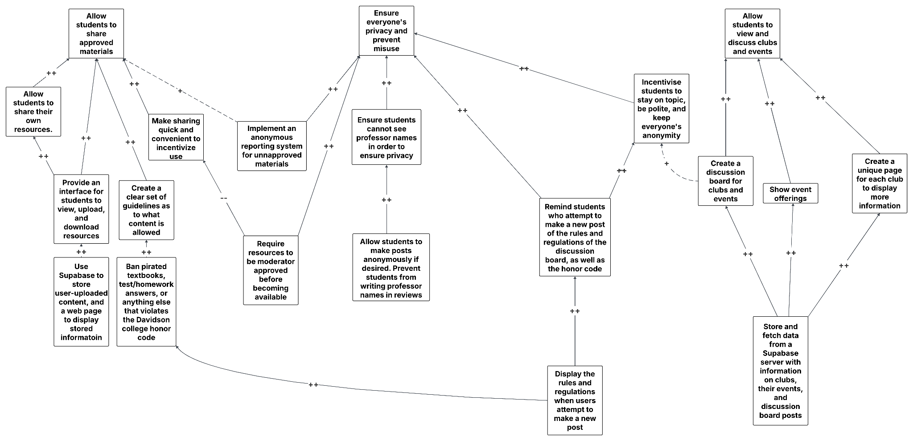
Worth noting is that we highlighted multiple ways we can go about preventing unapproved resources, which we have defined as "pirated textbooks, test/homework answers, or anything else that violates the Davidson College honor code," from circulating in our app. While we could require resources to be approved by a moderator before being shared on the app, we believed this may hurt the user experience in that resources would likely take far longer to be uploaded, which conflicts with our goal of creating a seamless user experience. For now, we are putting our faith in the anonymous reporting system, but may substitute this in favor of moderator approval in the future if need be.
7. System description
The Student Hub is a web-based platform designed to improve student engagement, academic collaboration, and resource-sharing within the college community. It serves as a centralized space where students can explore course listings, rate and review classes, share experiences about clubs, exchange textbooks, and provide feedback on their academic and social life. The system consists of multiple interconnected components that work together to ensure a seamless and responsive user experience.
The platform will be hosted on Vercel, which allows for easy deployment and continuous integration. The system architecture is divided into the following key components:
- Frontend: The user-facing interface where students interact with the platform. It retrieves data from the backend and presents it dynamically.
- Backend: Manages user authentication, data storage, and business logic. It processes user requests, interacts with the database, and sends the appropriate responses.
- Database: Stores user information, course reviews, resource-sharing posts, and feedback. Ensures data integrity and accessibility.
- Authentication: Students can log in or sign up using their .edu email address. Supabase will verify the provided information, return additional user details, and grant access to other sections of the system.
- APIs & communication: The frontend communicates with the backend via RESTful APIs, ensuring real-time interactions such as posting reviews, updating course information, and sharing resources.
8. Current status
For this sprint, we have completed the app's main functionality, complete with a page for general academic discussion, course review, clubs and events, and sharable resources. The main element missing from our project is Davidson SSO, which we will need to collaborate with Davidson T&I to implement. Additionally, we need to sync our app with WildcatSync in order to display clubs and events directly from the website, as opposed to creating an entire new database with all of the information already in WildcatSync.
All of the below screenshots pertain to our frontend, as our backend is handled by Supabase. They are all relevant, as each screenshot covers the main components of our app (the resource sharing, feed, club, event, discussion board, and course review pages).
Feed page
The feed page underwent multiple UI adjustments along with an important feature requested by our customers: post reporting. Clicking the flag in the top-right corner of any post will open up the "Report Post" modal, which will prompt the user to input a reason for flagging and any additional comments they wish to make. Afterwards, the report will be stored in our database, and the user will no longer see the post on the feed page.
In addition, the three most upvoted posts of the week are now displayed in the top right corner of the page. The last major change is the addition of a link to a separate page to make threads with 3 or more posts easier to view.
Input: User either writes/replies to a post,
upvotes/downvotes a post, or reports a post.
Output: The Supabase server is updated with the relevant
information, and the Feed page reflects the update in the backend.
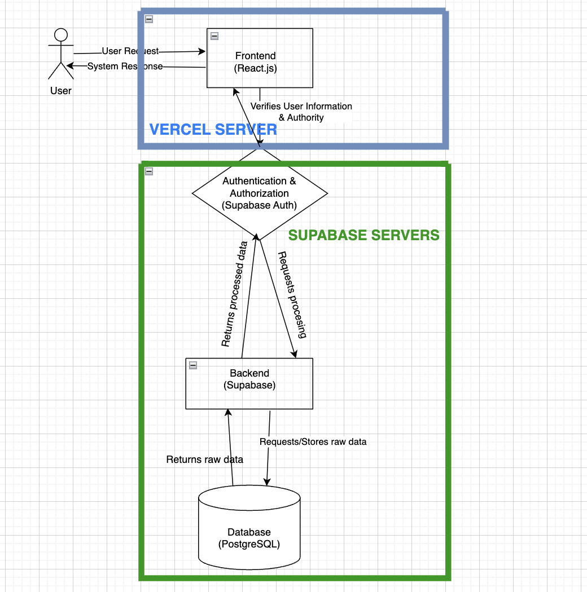
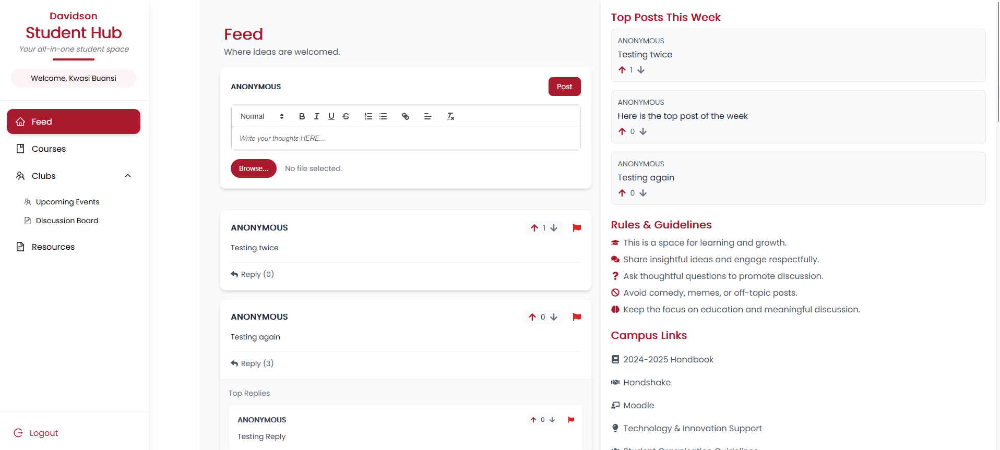
Events and clubs page
The events page now has a functioning search bar in which events can be filtered based on their name or the host club's name. The time is now displayed using the 12-hour clock, and the date is now in MM/DD/YYYY format.
The clubs page now has a prototype layout and displays all of the selected club's future events, along with pagination to scroll through events. The "Contact" button links to a modal that shows the club's contact information, if provided, to facilitate contact with club leadership.
Finally, due to technical and time constraints, we cannot sync our app with WildcatSync, so the user will not be able to register for clubs or events directly using our app. For the time being, we have provided a link to WildcatSync to encourage users to register manually.
Input: User clicks on one of the events in the page.
Output: The user is redirected to that event's respective
club page.
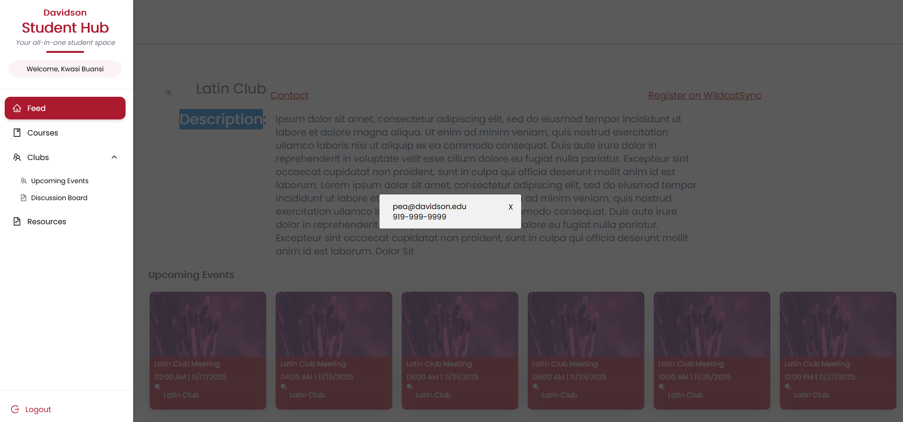
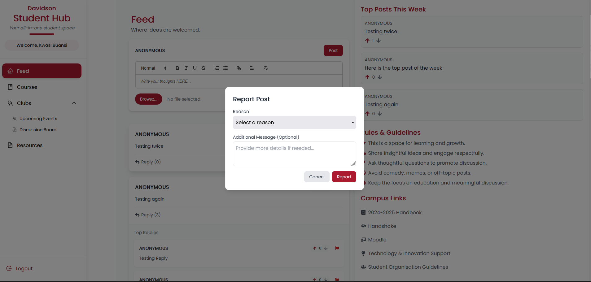
Discussion board
Our new discussion board is designed to be a space in which students can specifically discuss clubs or club activities, designed separately from the feed page to encourage more on-topic discussion. Currently, it displays 12 threads per page in date order (newest to oldest), with pagination to scroll through pages.
The board displays the title of each thread, the club it pertains to, the user who made the post (or "Anonymous"), the date it was posted in MM/DD/YYYY format, and the number of replies to the original post. Clicking on one of the threads will bring the user to the thread page, which displays the post title, poster (or "Anonymous"), the date and time the post was posted, and an option to upvote or downvote the post. The upvote/downvote option will not display if the original poster accessed the thread.
Below that, there is a text area for users to write comments to the post, along with a checkbox that, if checked, will make the user's name display as "Anonymous." Beneath the text area, all of the replies to the post will display in date order (newest to oldest), along with the option to upvote or downvote each.
When making a new post, the app will display a modal containing a reminder as to the discussion board guidelines, along with a link to the honor code. The user will have to agree to all of the rules stipulated to proceed. After which, the user is prompted to enter their thread's title, content, and club that it pertains to, along with an option to post as "Anonymous."
Input: The user sends/replies to a post, or
upvotes/downvotes a post.
Output: The Supabase server is updated with the relevant
information, and the discussion board is updated to reflect the change in
the backend.
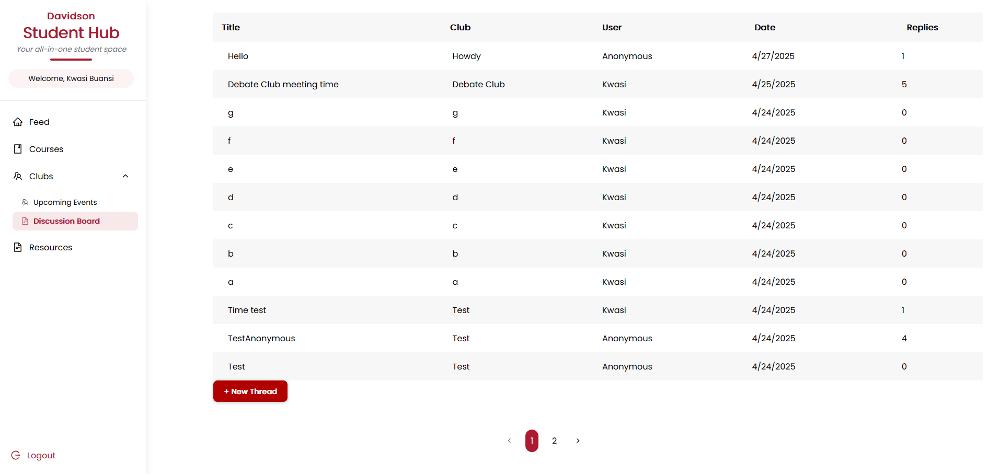
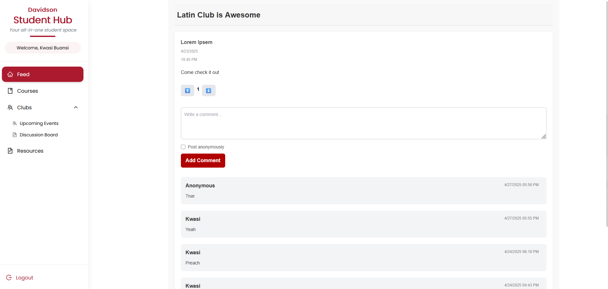
Resources page
For this sprint, the resources page was connected to our Supabase server, where a table was made to store file metadata and a storage bucket to store the actual files. Additionally, upon uploading a file, the page is automatically updated based on the data in our database.
Input: The user uploads a file.
Output: The file is stored in the Supabase server, and
the page is updated to reflect the change in the backend.
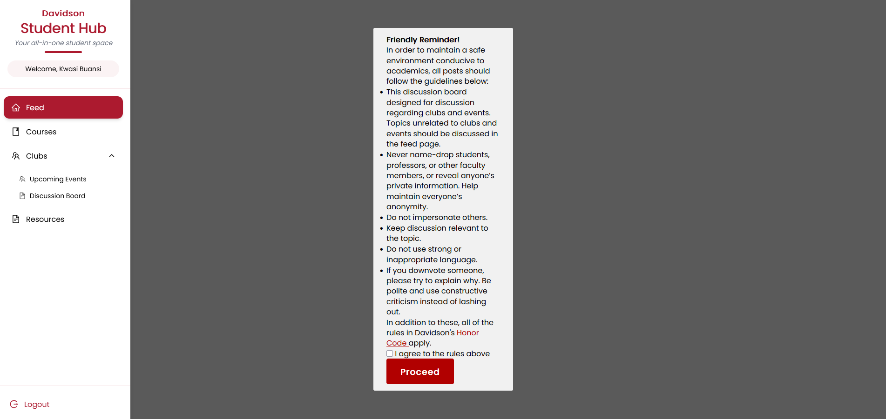
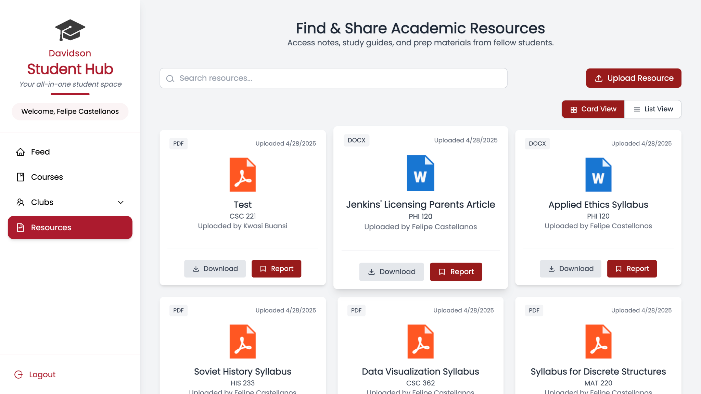
Course review page
For this sprint, a search function was added in the "Write a Review" modal that allows users to easily find their desired course when writing a review. The search function filters based on the course's name or code, and displays matching results in a drop-down list.
Users can now modify their existing review's rating and comment, and can delete their review if desired. If a user does not input a valid star rating (such as text instead of a number), the app will now display an "invalid rating" message, prompting them to enter a valid rating.
Input: The user writes a review, or rates a course.
Output: The Supabase server is updated with the relevant
change, and so is the page based on the backend.
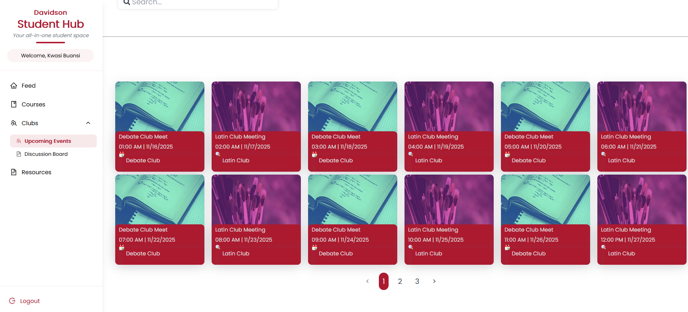
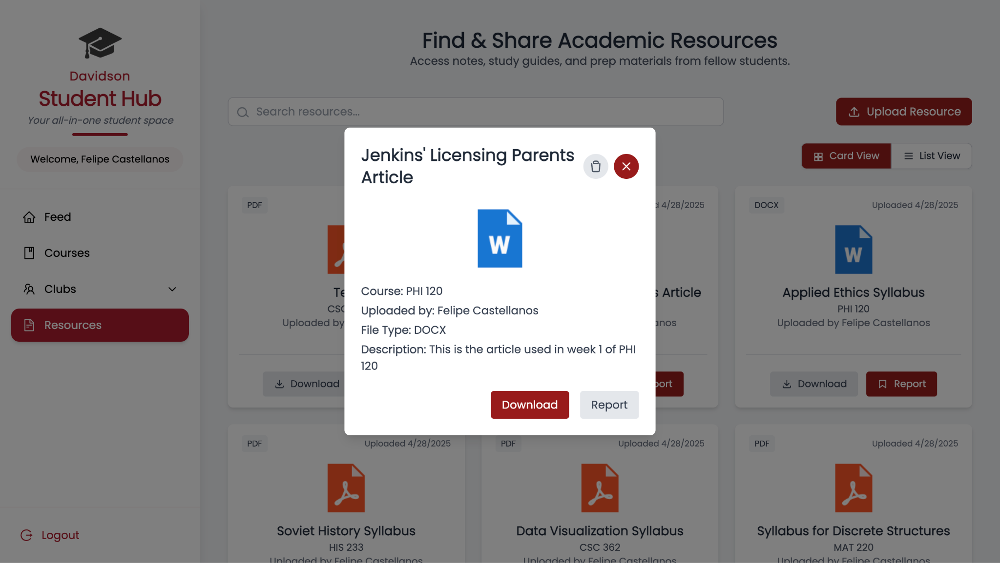
8b. Software testing
Test cases
1. Test Feed page
- User can make a new post
- User can reply to other posts
- User can view other user's replies
- User can upvote and downvote content
- User can report content
These test cases are relevant because they relate to the core functionality of the user page, along with CRUD functionality. This follows the precedent set by social media apps, such as Reddit and Twitter, that we were attempting to follow when creating the Feed page, in which users can create posts, reply to others, browse posts, upvote or downvote content, and report unwanted content to flag for deletion.
2. Test Event page
- User can see upcoming events based on information in Supabase
- The search bar on the page should filter events based on their name and host club's name
- User is taken to the event's corresponding club's club page when the event card is clicked
- The club page should display the club's title, description, contact information, and a link to WildcatSync
- The club page displays all the club's future events
This all corresponds to the core functionality of our events and clubs pages — pages where you can browse events and view club information respectively. Creating new clubs or events is not listed because, in the future, our app would ideally pull all club and event data from WildcatSync, and we currently only have placeholder data. These test cases emphasize the basic UI/UX enhancements emphasized by our customers.
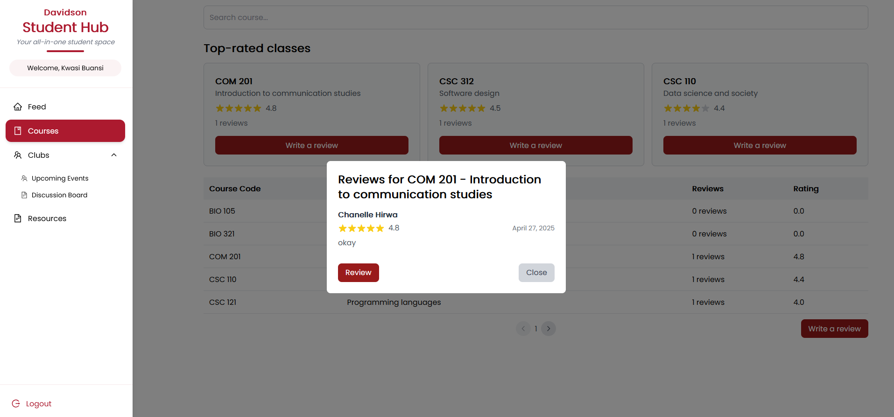
3. Test Discussion Board
- User can send posts to the discussion board
- User can reply to threads
- User can upvote and downvote other poster's threads
- User can upvote and downvote other poster's comments
- User cannot upvote or downvote their own posts/comments
Similar to the Feed page, these test cases emphasize the core functionality of our discussion board page while simultaneously emphasizing CRUD guidelines. In the future, our app will allow users to delete their posts and report unwanted posts, following the "deletion" portion of the CRUD guidelines.
4. Test Resource Sharing page's functionality
- User can upload a PDF, Word document, or PowerPoint to the database
- User can view resources fetched from the database
- User can download other user's files
- User can report other user's files
- Users can delete their files from the database
The resource sharing page's functionality demands that a user can upload, view, download, and report other users' content. We specify PDF, Word document, and PowerPoint to keep resources as on-topic and relevant to academics as possible, as these are the most common file formats a student would require for readings, projects, or syllabi. Reporting in particular is important to ensure all content is safe, ethical, and follows the guidelines stipulated by the honor code. Ensuring that resources can be downloaded, uploaded, and deleted ensures compliance with CRUD guidelines.
5. Test the Course Review page's functionality
- User can rate courses on a scale of 1 to 5
- User can post comments to explain ratings
- User can view all course ratings from other people along with their corresponding course names and number of reviews
- User can edit and delete reviews
- User can see information regarding their post, such as date posted, the course the post pertains to, and any other relevant information
Again, to follow the core functionality of the course review page while complying with CRUD guidelines, all of these test cases are relevant. Students should be able to view, rate, and comment on courses, while being able to view and comment on other users' ratings. Editing and deletion are to comply with CRUD guidelines.
Combinatorial testing factors
| Factor | Values |
|---|---|
| OS | Windows, iOS, Linux, Android, iPhone |
| Browser | Chrome, Firefox, Microsoft Edge |
| Hardware | Laptop, Desktop, Samsung Smartphone, iPhone, Tablet |
| User type | Logged in as a student, logged in as an admin, logged in as a non-student |
9. Project management
| Date | Change description |
|---|---|
| March 5, 2025 | Removed Professor rating system |
| March 10, 2025 | Added anonymous community discussion under course reviews |
| March 12, 2025 | Adjusted moderation system |
| March 15, 2025 | Developed a complete UI prototype on Figma |
| March 28, 2025 | Added card + list view toggle and resource preview to Resources page |
| March 30, 2025 | Enabled search functionality across key pages (Courses, Feed, Resources) |
| April 2, 2025 | Developed basic structure for Club pages |
| April 15, 2025 | Added post details page and replies, enabled only one review per student per course |
| April 18, 2025 | Developed edit and delete course reviews functionality; developed the clubs page |
| April 22, 2025 | Added top posts of the week and reporting functionality for both posts and replies |
| April 23, 2025 | Added usernames and dates for course reviews |
| April 24, 2025 | Implemented the basic functionality for the thread page |
| April 28, 2025 | Integration of backend to multiview setup (card/list view) and testing; enhancement of upload page on Resources Tab and integration of toast functionality |
| April 29, 2025 | Added upvoting, sorting and search functionality in the events page |
10. Sprint review and retrospective
Sprint review — April 20, 2025
Attendees: Team — Chanelle Hirwa, Kwasi Buansi, Pacis Nkubito, Felipe Castellanos. Customer representatives — Maria Fajardo, Aileen Kavishe, Branton Mogeni.
Goals and user stories presented:
- Backend integration with Supabase for file uploads and metadata storage, with automatic file type and uploader detection
- Fully functional club pages displaying future events, club contact modals, links to WildcatSync, and a discussion board with posting guidelines and anonymous posting options
- Adding "Top Posts of the Week" to the sidebar, and reporting functionality for posts and replies
- Searchable modal to find courses by name/code, create/edit/delete course reviews with input validation and real-time updates
Sprint review — April 27, 2025
Attendees: Team — Chanelle Hirwa, Kwasi Buansi, Pacis Nkubito, Felipe Castellanos. Customer representatives — Yumna Ahmed, Aileen Kavishe, Branton Mogeni.
Customer feedback:
- Customers liked the new level of backend integration, especially how resource uploads now auto-update without needing manual refresh
- Customers found the club discussion boards a strong addition for improving student engagement
- Customers appreciated the reporting system for keeping the feed safe and the ability to view full post threads with replies
Suggested improvements:
- Add search and sorting capabilities to the club discussion boards (e.g., sort by upvotes or number of replies)
- Expand moderator tools to manage reported posts and replies efficiently
Team roles
- Product Owner: Kwasi Buansi
- Scrum Master: Chanelle Hirwa
- Developers: Felipe Castellanos, Pacis Nkubito, Kwasi Buansi, Chanelle Hirwa
Contribution by each team member
Felipe Castellanos continued development of the Resources page by connecting it to our Supabase backend. He created a dedicated table to store file metadata and set up a storage bucket for actual file uploads. Felipe made sure the front end and back end synced properly and added real-time updates for uploads. He also improved the system to automatically detect the file type and uploader information, removing the need for manual input during upload.
Kwasi Buansi completed the Clubs page, which now displays future events hosted by each club along with a modal for contact information. He added a search bar for the events page and created a discussion board for clubs where users can post, reply, and upvote or downvote posts. When making a new post, users are shown posting guidelines and must agree before proceeding. Users can also choose to post anonymously. Although event registration was out of scope for this sprint, Kwasi linked clubs to WildcatSync and maintained UI consistency by allowing downvotes. Looking ahead, he suggested improvements like sorting and search functionality for the discussion board and UI refinements for the Clubs page.
Pacis Nkubito focused on enhancing the feed by adding a "Top Posts of the Week" section to the right sidebar, which displays the most upvoted posts. He also built a detailed view page for individual posts where users can view replies (similar to platforms like X or Reddit). Additionally, he implemented a reporting feature allowing users to report posts and replies; reported content is hidden from the reporter and stored in the database for review. Pacis encountered challenges integrating Davidson's Single Sign-On (SSO) due to needing Davidson T&I coordination, which has been moved to the next sprint, along with building a moderator dashboard for managing submitted reports.
Chanelle Hirwa developed a modal with a dynamic search bar allowing users to find courses by name or code and submit course reviews. Each review now displays the username, post date, star rating (1–5), and comment. Chanelle added functionality for users to edit or delete their existing reviews and included input validation to prevent invalid ratings. An "Invalid rating" message displays for wrong inputs, and submission is disabled until corrected.
Challenges
While we successfully implemented the main features of our app, we faced some unexpected challenges along the way. In retrospect, we could have communicated more consistently regarding our issues and the expectations of our app. Sometimes it was not entirely clear throughout the team what exactly our implementation should look like, and there are some inconsistencies in the UI and terminologies we used.
A new challenge that emerged this sprint was the increased complexity in backend integration, especially around syncing Supabase data with the frontend in real time. Additionally, external dependencies, such as needing Davidson's T&I support for SSO integration, slowed progress in certain areas.
Another difficulty was maintaining UI consistency across different features, since multiple pages were worked on in parallel. Going forward, early communication about external needs could help make development faster for future sprints. We also intend to further integrate all of the app's features to ensure they use a consistent UI and terminology.